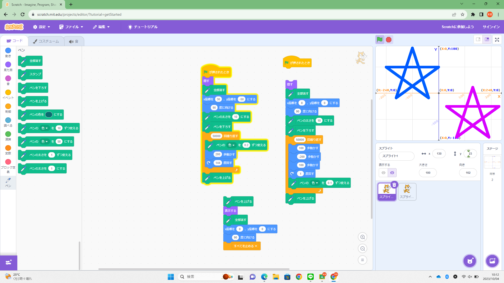
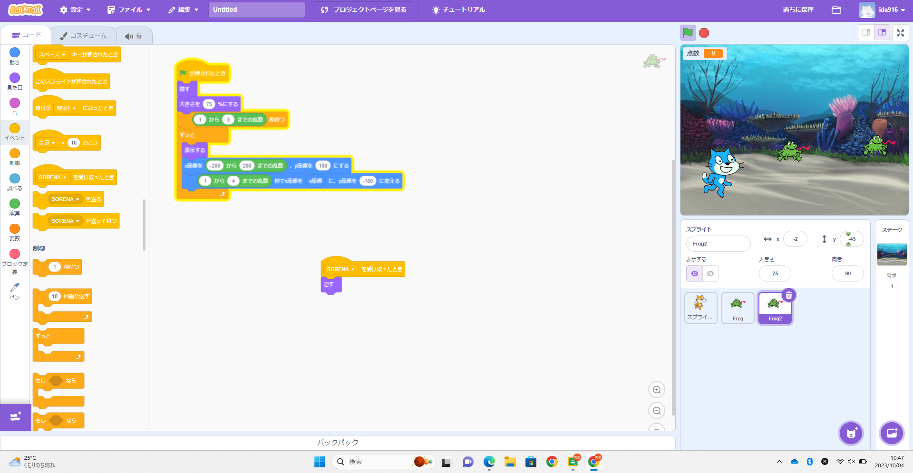

1週目のレポート ： 公大高専１年実習I-1
4b班38番 山中
第1週目
1-1 サイエンスアート

1.内容
角度や色を調節し星形を描くプログラムを作成しました。また作成したものを複製して色の変化の割合や位置などを変え、二つの次々と色の変わる星が完成しました。ネコは非表示にして星が見やすくなるよう工夫しました。。
2.感想
曲がる角度を変え綺麗な星に見えるよう調整していくのが難しくもありましたが楽しかったです。もう少し数を増やし大きさを調整して、背景を変更するなどして、さらに改良を加えることが出来そうだと感じました。
1-2 ゲーム

1.内容
蛙のような生き物が降ってきて、それにネコが触れると得点が入ります。蛙もどきは二体用意しており、降ってくるタイミングも乱数によってランダムに設定しました。また、ネコは少しずつ色が変わります。
2.感想
基本的なゲームの形は出来たので、ここからさらに自分で要素を足していき、よりオリジナリティーのあるものにしていきたいと思いました。
1-3 ホームページ作成
私のホームページ
1.内容
githubを初めて使い、自分でホームページを作成しました。
2.感想
始めてみるような機能が多く、戸惑いもありましたが、うまく効果が反映されたときには満足感がありました。ホームページといえば「誰かによって作られているものを見る」といったイメージがあったのですが、それを今回自分自身で作ることで新たな視点による気づきもあり、非常にいい経験になりました。